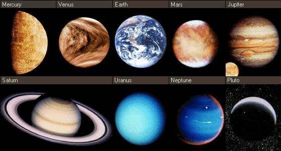

A Beautiful Journey
The Solar System[c] is the gravitationally bound system of the Sun and the objects that orbit it. It formed 4.6 billion years ago from the gravitational collapse of a giant interstellar molecular cloud. The vast majority (99.86%) of the system's mass is in the Sun, with most of the remaining mass contained in the planet Jupiter. The four inner system planets—Mercury, Venus, Earth and Mars—are terrestrial planets, being composed primarily of rock and metal. The four giant planets of the outer system are substantially larger and more massive than the terrestrials. The two largest, Jupiter and Saturn, are gas giants, being composed mainly of hydrogen and helium; the next two, Uranus and Neptune, are ice giants, being composed mostly of volatile substances with relatively high melting points compared with hydrogen and helium, such as water, ammonia, and methane. All eight planets have nearly circular orbits that lie near the plane of Earth's orbit, called the ecliptic.
There are an unknown number of smaller dwarf planets and innumerable small Solar System bodies orbiting the Sun. Six of the major planets, the six largest possible dwarf planets, and many of the smaller bodies are orbited by natural satellites, commonly called "moons" after Earth's Moon. Two natural satellites, Jupiter's moon Ganymede and Saturn's moon Titan, are larger but not more massive than Mercury, the smallest terrestrial planet, and Jupiter's moon Callisto is nearly as large. Each of the giant planets and some smaller bodies are encircled by planetary rings of ice, dust and moonlets. The asteroid belt, which lies between the orbits of Mars and Jupiter, contains objects composed of rock, metal and ice. Beyond Neptune's orbit lie the Kuiper belt and scattered disc, which are populations of objects composed mostly of ice and rock.
In the outer reaches of the Solar System lies a class of minor planets called detached objects. There is considerable debate as to how many such objects there will prove to be. Some of these objects are large enough to have rounded under their own gravity and thus to be categorized as dwarf planets. Astronomers generally accept about nine objects as dwarf planets: the asteroid Ceres, the Kuiper-belt objects Pluto, Orcus, Haumea, Quaoar and Makemake, the scattered-disk objects Gonggong and Eris, and Sedna. Various small-body populations, including comets, centaurs and interplanetary dust clouds, freely travel between the regions of the Solar System.
The solar wind, a stream of charged particles flowing outwards from the Sun, creates a bubble-like region of interplanetary medium in the interstellar medium known as the heliosphere. The heliopause is the point at which pressure from the solar wind is equal to the opposing pressure of the interstellar medium; it extends out to the edge of the scattered disc. The Oort cloud,which is thought to be the source for long-period comets, may also exist at a distance roughly a thousand times further thanthe heliosphere. The Solar System is located 26,000 light-years from the center of the Milky Way galaxy in the Orion Arm, which contains most of the visible stars in the night sky. The nearest stars are within the so-called Local Bubble, with the closest, Proxima Centauri, at 4.2441 light-years.